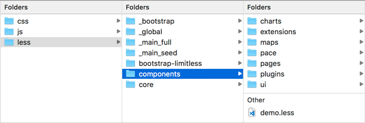
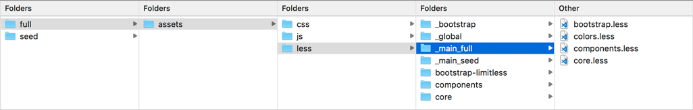
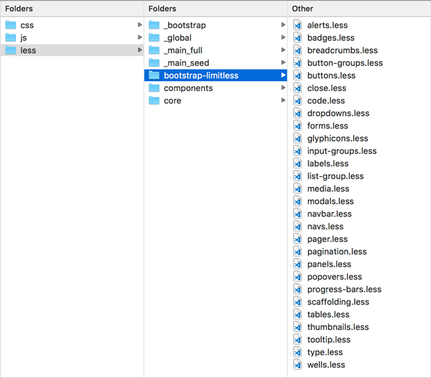
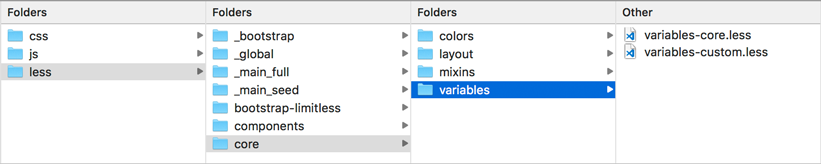
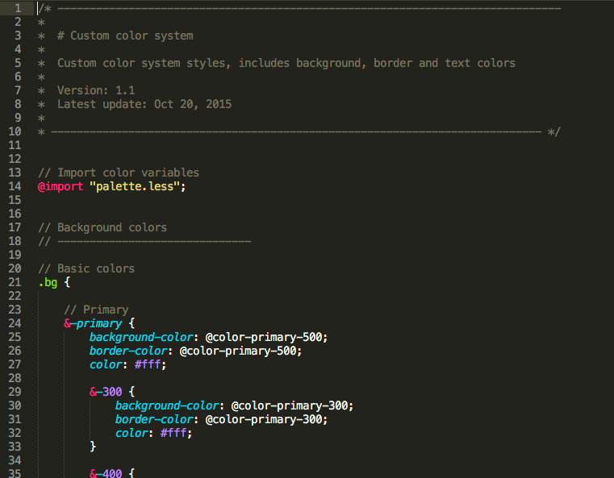
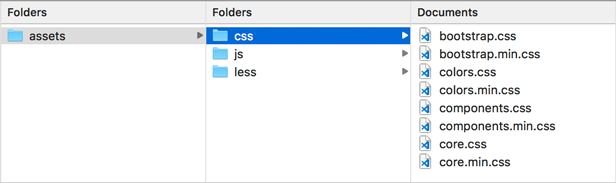
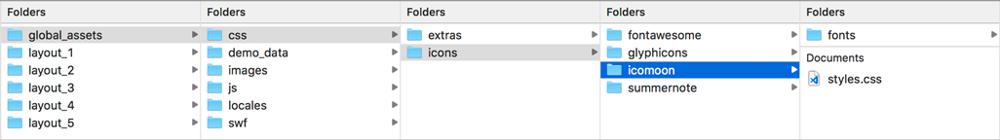

Limitless - LESS and CSS
Overview
All Limitless styles are based on LESS pre-processor - it extends the CSS language, adding features that allow variables, mixins, functions and many other techniques that allow you to make CSS that is more maintainable, themable and extendable. In total there are 203 fully commented LESS files in each template layout. Basically, the all are the same, except some files with changes according to the layout type. Among them - Bootstrap components core, overrides for them, layout and components related files. All files are properly divided into categories and placed inside nested folders:
Screenshot - less structure
Editing
To edit LESS files, use any code editor that supports .less file types. I prefer to use Sublime Text editor with additional LESS syntax highlight package, it's very flexible and works really fast. Another good one is Visual Studio Code, which has built-in terminal. To include or exclude components from your project, edit 4 main files located in assets/less/_main_full/ or assets/less/_main_seed/ folder if you use starter kit.
Screenshot - main files to edit
When a new Bootstrap version comes out, it's very important to keep upgrading process as simple as possible. That was the main reason why i've decided to go this way - all core Bootstrap files remain untouched, all necessary changes need to be done in separate file with the same name in /bootstrap-limitless/ folder. This allows us to override default bootstrap CSS file after compiling.
I strongly recommend not to make any changes in default Bootstrap LESS files, but use files from /bootstrap-limitless/ folder. This will simplify your upgrading process in the future. But, of course, feel free to update any of template files if necessary.
Screenshot - Bootstrap overrides
If you need to change a default theme, you can edit template's variables - all main colors, spacings and other styles are located there. Main template's variables are stored in 2 files: variables-core.less and variables-custom.less, located in assets/less/core/variables/ folder.
variables-core.less contains default Bootstrap variables overrides only. variables-custom.less contains all other variables used in the template. Feel free to edit both these files.
Screenshot - variables
Compiling
There are tons of different applications and extensions available for LESS compiling, i prefer to use Gulp (gulpfile.js is included) in the package. It has a bunch of configuration options, works very fast and effectively.
By default, Limitless template uses 4 separate compiled CSS files - bootstrap.css, core.css, colors.css and component.css (both compressed and uncompressed versions). As you may notice, files have same names as 4 main less files located in assets/less/ folder root. Actually these 4 css files are compiled main less files. In fact, to compile CSS files, you need to use only these 4 main less files:
bootstrap.less- Bootstrap corecore.less- Bootstrap core overridescomponents.less- all template components and plugins, except Bootstrap onescolors.less- color system (optional)
The reason why they were divider into 4 files is older versions of IE don't support css files with 10k+ properties. If you don't use some of them or don't care much about IE, feel free to combine those 4 files into 2, try to keep bootstrap.css separately. Color system is completely optional, if you've setup your primary theme, you can exclude this file and re-compile your CSS.
Screenshot - colors.less file
LESS folder includes all files responsible for template styling - core, layout, components, plugins, page kits etc. All files are properly structured according to the category: bootstrap - Bootstrap framework core styling; bootstrap-limitless - Limitless overrides of Bootstrap core styling loaded on top of original ones; components - main template components, custom pages and plugins; core - layout structure, Bootstrap variables overrides and additional custom core variables.
4 main files that load all others are in folder root - bootstrap.less, colors.less, components.less and core.less. If you need to include or exclude any files or components, edit one of these files. Below is the table with categorized LESS files used in the template:
Bootstrap core
Contains 41 main files and 30 mixins. File bootstrap.less is actually a part of Bootstrap core, but it was moved to the parent folder for easy access. If you don't want to wait until my updates and want to update Bootstrap versions manually, you need to compile bootstrap.less file separately. But i will do my best to keep it up to date. Also i don't recommend to edit any of these files as new updates will be much painful.
| File name | Description | |
|---|---|---|
| Main files | ||
alerts.less |
Alert components | |
badges.less |
Badges component | |
breadcrumbs.less |
Breadcrumbs component | |
button-groups.less |
Button groups | |
buttons.less |
Button stylings | |
carousel.less |
Carousel component | |
close.less |
Close button | |
code.less |
Inline and blocks of code | |
component-animations.less |
Animations | |
dropdowns.less |
Dropdown menus | |
forms.less |
Basic form components styling | |
glyphicons.less |
Glyphicons icon font | |
grid.less |
Responsive mobile-first grid | |
input-groups.less |
Input groups component | |
jumbotron.less |
Jumbotron component | |
labels.less |
Labels component | |
list-group.less |
List group nav component | |
media.less |
Media lists | |
mixins.less |
Mixins loading file | |
modals.less |
Modal dialogs | |
navbar.less |
Navbar | |
navs.less |
Tab, pill and other navs | |
normalize.less |
General reset | |
pager.less |
Pager component | |
pagination.less |
Pagination component | |
panels.less |
Content panels | |
popovers.less |
Popovers component | |
print.less |
Print styles | |
progress-bars.less |
Progress bars component | |
responsive-embed.less |
Responsive embeds | |
responsive-utilities.less |
Responsive utility classes | |
scaffolding.less |
General scaffolding | |
tables.less |
Tables styling | |
theme.less |
Optional theme file | |
thumbnails.less |
Thumbnails component | |
tooltip.less |
Tooltip component | |
type.less |
Typography, page header and contextual backgrounds | |
utilities.less |
Utilities | |
variables.less |
Main variables | |
wells.less |
Well blocks component | |
| Bootstrap mixins | ||
alerts.less |
Alerts with color options | |
background-variant.less |
Contextual backgrounds | |
border-radius.less |
Border radius: top, bottom, left, right | |
buttons.less |
Buttons with color and sizing options | |
center-block.less |
Centered blocks | |
clearfix.less |
Clear and reset floating | |
forms.less |
Form control validation | |
gradients.less |
Gradient options | |
grid-framework.less |
Responsive grid system | |
grid.less |
Grid columns, container and offsets | |
hide-text.less |
Text visibility | |
image.less |
Responsive and retina images | |
labels.less |
Label color options | |
list-group.less |
List group color variants | |
nav-divider.less |
Navigation divider | |
nav-vertical-align.less |
Vertical navigation alignment | |
opacity.less |
Opacity mixin | |
pagination.less |
Pagination sizes | |
panels.less |
Panels with contextual variants | |
progress-bar.less |
Progress bars colors | |
reset-filter.less |
Gradient reset for IE | |
reset-text.less |
Text reset | |
resize.less |
Resize elements | |
responsive-visibility.less |
Responsive utilities | |
size.less |
Sizing shortcuts | |
tab-focus.less |
WebKit-style focus | |
table-row.less |
Table row styling variants | |
text-emphasis.less |
Text colors | |
text-overflow.less |
Text overflow | |
vendor-prefixes.less |
Animations, box shadow, transitions and other vendor prefixes | |
Template overrides
Contains 28 modified .less files from /less/bootstrap/ folder. I don't remember what exactly has been changed as it took pretty much time, but i've described briefly what was changed and where. Most of the files include extended components functionality, options and styles. If you want to make any changes in these files, go ahead. If you don't use any of these components, exclude them in core.less file.
| File name | Description | |
|---|---|---|
| Main files | ||
alerts.less |
Alert component - color and other options | |
badges.less |
Badges component - size and color options | |
breadcrumbs.less |
Breadcrumbs component - added new options, changed default styles and added new | |
button-groups.less |
Button groups - styling changes | |
buttons.less |
Button styles - added button layouts and changed defaults | |
close.less |
Close button - updated close button size and position | |
code.less |
Inline and blocks of code - slightly modified default styles | |
dropdowns.less |
Dropdown menus - sizes, colors, components | |
forms.less |
Basic form components styling - general form components updates | |
glyphicons.less |
Glyphicons icon font - changed paths to font files | |
input-groups.less |
Input groups component - Added options and sizes, changed defaults | |
labels.less |
Labels component - sizes, styles and additinoal options | |
list-group.less |
List group nav component - changed colors, sizes, default options | |
media.less |
Media lists - added and changed a lot of different stuff | |
modals.less |
Modal dialogs - additional styling options | |
navbar.less |
Navbar - oh, a lot of things, almost re-coded | |
navs.less |
Tab, pill and other navs - here as well, completely changed tabs and pills layouts and default options | |
pager.less |
Pager component - added sizes and updated default options | |
pagination.less |
Pagination component - additional pagination styles with differnet options | |
panels.less |
Content panels - extended defaults, updated general look and feel | |
popovers.less |
Popovers component - additional styles and changed defaults | |
progress-bars.less |
Progress bars component - added sizes and slightly changed defaults | |
scaffolding.less |
General scaffolding - a couple of changes | |
tables.less |
Tables styling - extended default views and styles, added a lot of different options | |
thumbnails.less |
Thumbnails component - extended default functionality | |
tooltip.less |
Tooltip component - extended default functionality and added new styles | |
type.less |
Typography, page header and contextual backgrounds - a LOT of new code | |
wells.less |
Well blocks component - background colors, paddings, colors etc. | |
Components
Contains 105 .less files. In fact, all these files are responsible for template layout, styling and functionality: plugins, extensions, custom page kits, charts, layout, core, variables etc. Feel free to edit any of these files, in future releases i'll provide detailed explanations in changelog about edited files and pieces of code that needs to be updated.
| File name | Description | |
|---|---|---|
| Charts | ||
charts.less |
Charts base | |
c3.less |
C3.js visualization library | |
d3.less |
D3.js visualization library | |
sparklines.less |
Sparklines library | |
| jQuery UI | ||
autocomplete.less |
Autocomplete extension | |
datepicker.less |
Datepicker extension | |
menu.less |
Menu extension | |
sliders.less |
Vertical and horizontal sliders | |
sortable.less |
Sortable and draggable extensions | |
| Maps | ||
google-maps.less |
Google maps | |
jvectormap.less |
Vector maps | |
maps.less |
Maps base | |
| Pace loader | ||
default.less |
Default thin line | |
pace-demo.less |
Pace demonstration | |
theme-bar-sm.less |
Small progress bar theme | |
theme-bar-xs.less |
Mini progress bar theme | |
theme-bar.less |
Default progress bar theme | |
theme-corners.less |
Corners theme | |
theme-perspective.less |
Perspective theme | |
theme-radar.less |
Radar theme | |
theme-squares.less |
Rotating squares theme | |
theme-tail-circle.less |
Tail and background circle theme | |
theme-tail.less |
Tail theme | |
theme-xbox-sm.less |
Small Xbox theme | |
theme-xbox-xs.less |
Mini Xbox theme | |
theme-xbox.less |
Default Xbox theme | |
| Page kits | ||
chats.less |
Chat layouts and options | |
error.less |
Error pages | |
invoice.less |
Invoice template | |
login.less |
Login and registration pages | |
profile.less |
User profiles | |
search.less |
Search pages with options | |
task-manager.less |
Task manager grid and detailed view | |
timelines.less |
Timeline directions and styles | |
user-list.less |
User list | |
| Plugins | ||
bootstrap-switch.less |
Bootstrap toggle switches | |
switchery.less |
Switchery toggles | |
uniform.less |
Custom checkboxes, radios and file input styling | |
ace.less |
Ace code editor | |
summernote.less |
Summernote text editor | |
wysihtml5.less |
WYSIHTML5 text editor | |
typeahead.less |
Typeahead extension | |
validation.less |
Form validation | |
passy.less |
Password checker and generator | |
editable.less |
Editable form elements | |
dual-listbox.less |
Dual multiple select boxes | |
touchspin.less |
Touchspin spinners for Bootstrap | |
bootstrap-select.less |
Bootstrap single and multiple selects | |
selectbox.less |
SelectBoxIt selects | |
select2.less |
Single and multiple Select2 selects | |
multiselect.less |
Bootstrap multiselect | |
tokenfield.less |
Tokenfield for Bootstrap | |
tags-input.less |
Tags input plugin | |
form.less |
Form wizard | |
steps.less |
Steps wizard | |
stepy.less |
Stepy wizard | |
fancybox.less |
Lightbox plugin | |
image-cropper.less |
Image cropper extension | |
progress-buttons.less |
Ladda - buttons with spinner and progress bar | |
fullcalendar.less |
Fullcalendar - event calendar extension | |
fancytree.less |
Fancytree - dynamic multi level tree view | |
prism.less |
Prism - syntax highlighter | |
headroom.less |
Headroom - hideable navbars | |
sweet-alerts.less |
Nice looking alerts and dialogs | |
jgrowl.less |
jGrowl - growl-like notifications | |
noty.less |
Noty - yet another notification library | |
pnotify.less |
PNotify - powerful notification library | |
noui-slider.less |
NoUI slider library | |
slider-pips.less |
Pips and tooltip for jQuery UI sliders | |
anytime.less |
Anytime - date and time picker | |
bootstrap-datepicker.less |
Datepicker for Bootstrap | |
date-paginator.less |
Date paginator - dates with date picker | |
daterange.less |
Date range picker | |
spectrum.less |
Spectrum - color picker | |
pickadate/base.less |
Pick-a-date - basic styling | |
pickadate/date.less |
Pick-a-date - date picker | |
pickadate/time.less |
Pick-a-date - time picker | |
dropzone.less |
Dropzone - HTML5 single and multiple file uploader | |
file-input.less |
Bootstrap file input - single and multiple file uploader | |
plupload.less |
Plupload - file uploader with multiple runtimes | |
datatable-columns-reorder.less |
Datatable extension - columns reorder | |
datatable-columns-visibility.less |
Datatable extension - columns visibility | |
datatable-fixed-columns.less |
Datatable extension - fixed columns | |
datatable-responsive.less |
Datatable extension - responsive table | |
datatable-scroller.less |
Datatable extension - scroller | |
datatable-tabletools.less |
Datatable extension - tabletools | |
datatables.less |
Datatables base | |
footable.less |
Footable - responsive static tables | |
heading-elements.less |
Page and panel heading components | |
helpers.less |
Helper classes | |
snippets.less |
Different snippets | |
demo.less |
Styles used in live preview | |
| Core | ||
variables.less |
Bootstrap variables overrides | |
core-variables.less |
Additional core variables | |
nav-vertical-align.less |
Extended vertical nav alignment mixin | |
palette.less |
Color palette | |
colors.less |
Color classes | |
content.less |
Template content's base | |
footer.less |
Footer | |
boxed.less |
Boxed layout | |
sidebar.less |
Sidebars with navigation | |
utils.less |
Utilities | |
| Main files for compile | ||
bootstrap.less |
Main bootstrap LESS file, moved from /bootstrap/ folder |
|
colors.less |
Color system | |
components.less |
Template components | |
core.less |
Bootstrap overrides | |
Files overview
Limitless template includes 3 main and 1 optional compiled CSS files included in all pages. All files have commented sections with information about dates of latest update, version and brief description. All other comments that can be found in LESS files are removed during compilation to reduce the size of CSS files. bootstrap.css is always minified, because i didn't make any changes in Bootstrap core. colors.css is also minified, because there is actually nothing to change inside, all color values can be found in palette.less file. Minified files are included as well.
bootstrap.css,*.min.css- Bootstrap core, always use minifiedcore.css,*.min.css- Bootstrap core overridescomponents.css,*.min.css- all template components and pluginscolors.css,*.min.css- color classes, always use minified
Note: both minified and unminified CSS files are inside same folder, because paths to images and font files are equal in both versions. If you want to place source or minified files into different folders, don't forget to change those paths. Also feel free to remove unnecessary CSS files if you don't use them. I strongly suggest not to make changes directly in CSS, but do it in LESS files instead to avoid difficulties in upgrade to newer versions. If you need any help with compiling CSS, let me know and i'll help you out.
Screenshot
CSS editing
Since main styling source is LESS files kit, i strongly recommend to use minified versions of all CSS files, that are included to the package and not to change CSS files directly. Edit LESS files instead, it will help you to keep all your changes in future updates, because i will add changes to LESS files first, re-compile all CSS and provide a detailed instructions about what needs to be changed and where it should be done in LESS files only.
Although main files editing is not recommended, icon font files can be edited. I didn't convert them to LESS files, as there is no need actually, because there are quite few CSS properties for them - general font reset and icon codes. If you need to add any changes to the icon styles.css files, feel free to do it. In all future updates i'll do my best to update icon package and main file with styles if necessary.
Screenshot
